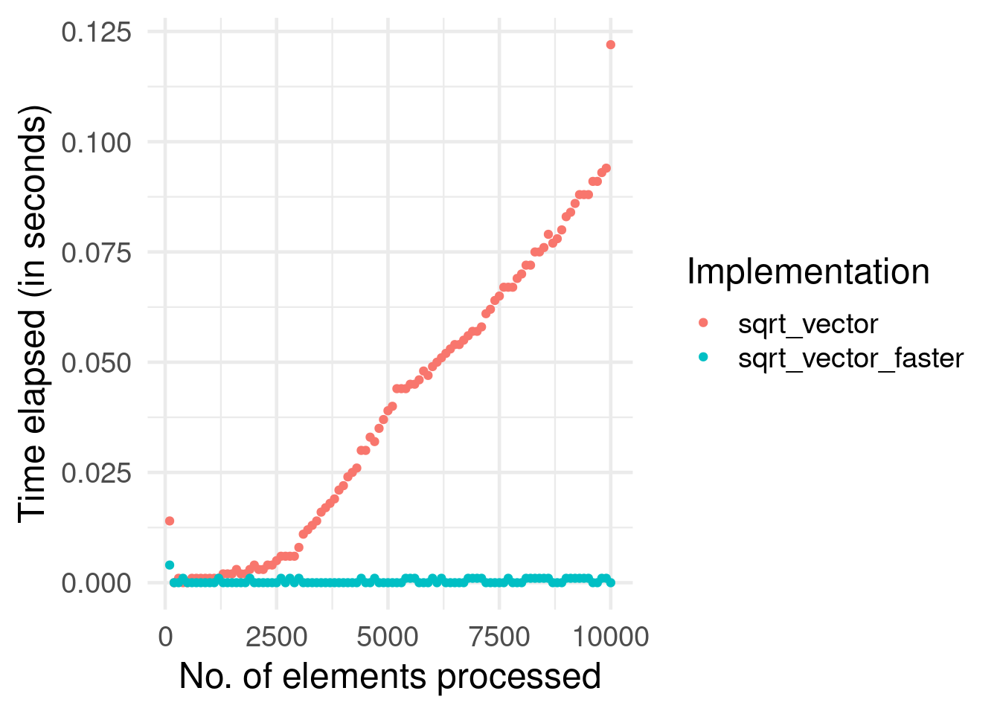

Chapter 2 Software: Toolbox
2.1 Programming with (Big) Data in R
2.1.1 R-tools to investigate performance/resource allocation
| package | function | purpose |
|---|---|---|
utils |
object.size() |
Provides an estimate of the memory that is being used to store an R object. |
pryr |
object_size() |
Works similarly to object.size(), but counts more accurately and includes the size of environments. |
pryr |
compare_size() |
Makes it easy to compare the output of object_size and object.size. |
pryr |
mem_used() |
Returns the total amount of memory (in megabytes) currently used by R. |
pryr |
mem_change() |
Shows the change in memory (in megabytes) before and after running code. |
base |
system.time() |
Returns CPU (and other) times that an R expression used. |
microbenchmark |
microbenchmark() |
Highly accurate timing of R expression evaluation. |
bench |
mark() |
Benchmark a series of functions. |
profvis |
profvis() |
Profiles an R expression and visualizes the profiling data (usage of memory, time elapsed, etc.). |
2.1.2 Typical Programming Tasks
Programming tasks in the context of data analysis typically fall into one of the following broad categories.
- Procedures to import/export data.
- Procedures to clean and filter data.
- Implement functions for statistical analysis.
When writing a program to process large amounts of data in any of these areas, it is helpful to take into consideration the following design choices:
- Which basic (already implemented) R functions are more or less suitable as building blocks for the program?
- How can we exploit/avoid some of R’s lower-level characteristics in order to implement efficient functions?
- Is there a need to interface with a lower-level programming language in order to speed up the code? (advanced topic)
Finally, there is an additional important point to be made regarding the implementation of functions for statistical analysis: Independent of how we write a statistical procedure in R (or in any other language, for that matter), is there an alternative statistical procedure/algorithm that is faster but delivers approximately the same result (as long as we use a sufficiently large data sets). The following subsections elaborate briefly on each of these points and show some code examples to further illustrate these points.
2.1.2.1 Building blocks for programming with big data
When writing a program in R, we can rely on many already implemented functions on which we can build. Often, there are even several functions already implemented that take care of essentially the same task. When the amount of data to be processed by these functions is not large, it doesn’t matter that much which ones we choose to build our program on. However, when we are writing a program which likely has to process large amounts of data, we should think more closely about which building blocks we choose to base our program on. For example, when writing the data-import part of a program, we could use the traditional read.csv() or fread() from the data.table-package. The result is very similar (in many situations, the differences of the resulting objects would not matter at all).
# read a CSV-file the 'traditional way'
flights <- read.csv("data/flights.csv")
class(flights)## [1] "data.frame"# alternative (needs the data.table package)
library(data.table)
flights <- fread("data/flights.csv")
class(flights)## [1] "data.table" "data.frame"However, the latter approach is usually much faster (see above for why this is the case in this example).
system.time(flights <- read.csv("data/flights.csv"))## user system elapsed
## 1.259 0.016 1.275system.time(flights <- fread("data/flights.csv"))## user system elapsed
## 0.301 0.003 0.0552.1.2.2 Writing efficient code
2.1.2.2.1 Memory allocation before looping
Recall the code example from the introductory lecture. When we write a for-loop that results in a vector or list of values, it is favorable to instruct R to pre-allocate the memory necessary to contain the final result. If we don’t do that, each iteration of the loop causes R to re-allocate memory because the number of elements in the vector/list is changing. In simple terms, this means that R needs to execute more steps in each iteration.
In the following example, we compare the performance of two functions. One taking this principle into account, the other not. The function takes a numeric vector as input and returns the square root of each element of the numeric vector.
# naïve implementation
sqrt_vector <-
function(x) {
output <- c()
for (i in 1:length(x)) {
output <- c(output, x[i]^(1/2))
}
return(output)
}
# implementation with pre-allocation of memory
sqrt_vector_faster <-
function(x) {
output <- rep(NA, length(x))
for (i in 1:length(x)) {
output[i] <- x[i]^(1/2)
}
return(output)
}As a proof of concept we use system.time() to measure the difference in speed for various input sizes.1
# the different sizes of the vectors we will put into the two functions
input_sizes <- seq(from = 100, to = 10000, by = 100)
# create the input vectors
inputs <- sapply(input_sizes, rnorm)
# compute ouputs for each of the functions
output_slower <-
sapply(inputs,
function(x){ system.time(sqrt_vector(x))["elapsed"]
}
)
output_faster <-
sapply(inputs,
function(x){ system.time(sqrt_vector_faster(x))["elapsed"]
}
)The following plot shows the difference in the performance of the two functions.
# load packages
library(ggplot2)
# initiate data frame for plot
plotdata <- data.frame(time_elapsed = c(output_slower, output_faster),
input_size = c(input_sizes, input_sizes),
Implementation= c(rep("sqrt_vector", length(output_slower)),
rep("sqrt_vector_faster", length(output_faster))))
# plot
ggplot(plotdata, aes(x=input_size, y= time_elapsed)) +
geom_point(aes(colour=Implementation)) +
theme_minimal(base_size = 18) +
ylab("Time elapsed (in seconds)") +
xlab("No. of elements processed")
2.1.2.2.2 Vectorization
We can further improve the performance of this function by exploiting the fact that in R ‘everything is a vector’ and that many of the basic R functions (such as math operators) are vectorized. In simple terms, this means that an operation is implemented to directly work on vectors in such a way that it can take advantage of the similarity of each of the vector’s elements. That is, R only has to figure out once how to apply a given function to a vector element in order to apply it to all elements of the vector. In a simple loop, R has to go through the same ‘preparatory’ steps again and again in each iteration.
# implementation with vectorization
sqrt_vector_fastest <-
function(x) {
output <- x^(1/2)
return(output)
}
# speed test
output_fastest <-
sapply(inputs,
function(x){ system.time(sqrt_vector_fastest(x))["elapsed"]
}
)Let’s have a look at whether this improves the function’s performance further.
# load packages
library(ggplot2)
# initiate data frame for plot
plotdata <- data.frame(time_elapsed = c(output_faster, output_fastest),
input_size = c(input_sizes, input_sizes),
Implementation= c(rep("sqrt_vector_faster", length(output_faster)),
rep("sqrt_vector_fastest", length(output_fastest))))
# plot
ggplot(plotdata, aes(x=input_size, y= time_elapsed)) +
geom_point(aes(colour=Implementation)) +
theme_minimal(base_size = 18) +
ylab("Time elapsed (in seconds)") +
xlab("No. of elements processed")
In the example above, we have simply exploited the fact that many of R’s basic functions (such as math operators) are vectorized. If the program we want to implement cannot directly benefit from such a function, there are basically two ways to make use of vectorization (instead of loops written in R).
One approach is to use an apply-type function instead of loops. Probably most widely used is lapply(), a function that takes a vector (atomic or list) as input and applies a function FUN to each of its elements. It is a straightforward alternative to for-loops in many situations. The following example shows how we can get the same result by either writing a loop or using lapply(). The aim of the code example is to import the Health News in Twitter Data Set by Karami et al. (2017). The raw data consists of several text files that need to be imported to R consecutively.
The text-files are located in data/twitter_texts/. For either approach of importing all of these files, we first need a list of the paths to all of the files. We can get this with list.files(). Also, for either approach we will make use of the fread-function in the data.table-package.
# load packages
library(data.table)
# get a list of all file-paths
textfiles <- list.files("data/twitter_texts", full.names = TRUE)Now we can read in all the text files with a for-loop as follows.
# prepare loop
all_texts <- list()
n_files <- length(textfiles)
length(all_texts) <- n_files
# read all files listed in textfiles
for (i in 1:n_files) {
all_texts[[i]] <- fread(textfiles[i])
}The imported files are now stored as data.table-objects in the list all_texts. With the following line of code we combine all of them in one data.table.
# combine all in one data.table
twitter_text <- rbindlist(all_texts)
# check result
str(twitter_text)## Classes 'data.table' and 'data.frame': 42422 obs. of 3 variables:
## $ V1:integer64 585978391360221184 585947808772960257 585947807816650752 585866060991078401 585794106170839041 585733482413891584 585733481608646657 585701601131765761 ...
## $ V2: chr "Thu Apr 09 01:31:50 +0000 2015" "Wed Apr 08 23:30:18 +0000 2015" "Wed Apr 08 23:30:18 +0000 2015" "Wed Apr 08 18:05:28 +0000 2015" ...
## $ V3: chr "Breast cancer risk test devised http://bbc.in/1CimpJF" "GP workload harming care - BMA poll http://bbc.in/1ChTBRv" "Short people's 'heart risk greater' http://bbc.in/1ChTANp" "New approach against HIV 'promising' http://bbc.in/1E6jAjt" ...
## - attr(*, ".internal.selfref")=<externalptr>Alternatively, we can make use of lapply as follows in order to achieve exactly the same.
# prepare loop
all_texts <- lapply(textfiles, fread)
# combine all in one data.table
twitter_text <- rbindlist(all_texts)
# check result
str(twitter_text)## Classes 'data.table' and 'data.frame': 42422 obs. of 3 variables:
## $ V1:integer64 585978391360221184 585947808772960257 585947807816650752 585866060991078401 585794106170839041 585733482413891584 585733481608646657 585701601131765761 ...
## $ V2: chr "Thu Apr 09 01:31:50 +0000 2015" "Wed Apr 08 23:30:18 +0000 2015" "Wed Apr 08 23:30:18 +0000 2015" "Wed Apr 08 18:05:28 +0000 2015" ...
## $ V3: chr "Breast cancer risk test devised http://bbc.in/1CimpJF" "GP workload harming care - BMA poll http://bbc.in/1ChTBRv" "Short people's 'heart risk greater' http://bbc.in/1ChTANp" "New approach against HIV 'promising' http://bbc.in/1E6jAjt" ...
## - attr(*, ".internal.selfref")=<externalptr>Finally, we can make use of Vectorization() in order to ‘vectorize’ (as far as possible) our own import function (written for this example).
# initiate the import function
import_file <-
function(x) {
parsed_x <- fread(x)
return(parsed_x)
}
# 'vectorize' it
import_files <- Vectorize(import_file, SIMPLIFY = FALSE)
# Apply the vectorized function
all_texts <- import_files(textfiles)
twitter_text <- rbindlist(all_texts)
# check the result
str(twitter_text)## Classes 'data.table' and 'data.frame': 42422 obs. of 3 variables:
## $ V1:integer64 585978391360221184 585947808772960257 585947807816650752 585866060991078401 585794106170839041 585733482413891584 585733481608646657 585701601131765761 ...
## $ V2: chr "Thu Apr 09 01:31:50 +0000 2015" "Wed Apr 08 23:30:18 +0000 2015" "Wed Apr 08 23:30:18 +0000 2015" "Wed Apr 08 18:05:28 +0000 2015" ...
## $ V3: chr "Breast cancer risk test devised http://bbc.in/1CimpJF" "GP workload harming care - BMA poll http://bbc.in/1ChTBRv" "Short people's 'heart risk greater' http://bbc.in/1ChTANp" "New approach against HIV 'promising' http://bbc.in/1E6jAjt" ...
## - attr(*, ".internal.selfref")=<externalptr>2.1.2.3 R, beyond R
So far, we have explored idiosyncrasies of R we should be aware of when writing programs to handle and analyze large data sets. While this has shown that R has many advantages for working with data, it also revealed some aspects of R that might result in low performance compared other programming languages. A simple generic explanation for this is that R is an interpreted language, meaning that when we execute R code, it is processed (statement by statement) by an ‘interpreter’ that translates the code into machine code (without the user giving any specific instructions). In contrast, when writing code in a ‘compiled language,’ we first have to explicitly compile the code and then run the compiled program. Running code that is already compiled is typically much faster than running R code that has to be interpreted before it can actually be processed by the CPU.
For advanced programmers, R offers various options to directly make use of compiled programs (for example, written in C, C++, or FORTRAN). In fact several of the core R functions installed with the basic R distribution are implemented in one of these lower-level programming languages and the R function we call simply interacts with these functions.
We can actually investigate this by looking at the source code of an R function. When simply typing the name of a function (such as our import_file()) to the console, R is printing the function’s source code to the console.
import_file## function(x) {
## parsed_x <- fread(x)
## return(parsed_x)
## }
## <bytecode: 0x560a88c38430>However, if we do the same for function sum, we don’t see any actual source code.
sum## function (..., na.rm = FALSE) .Primitive("sum")Instead .Primitive() indicates that sum() is actually referring to an internal function (in this case implemented in C).
While the use of functions implemented in a lower-level language is a common technique to improve the speed of ‘R’ functions, it is particularly prominent in the context of functions/packages made to deal with large amounts of data (such as the data.table package).
2.2 Speed improvements
https://stackoverflow.com/questions/6807068/why-is-my-recursive-function-so-slow-in-r
https://stackoverflow.com/questions/62047104/r-cbind-is-very-slow
2.3 SQL basics
We generate the numeric input by drawing vectors of (pseudo) random numbers via
rnorm().↩︎